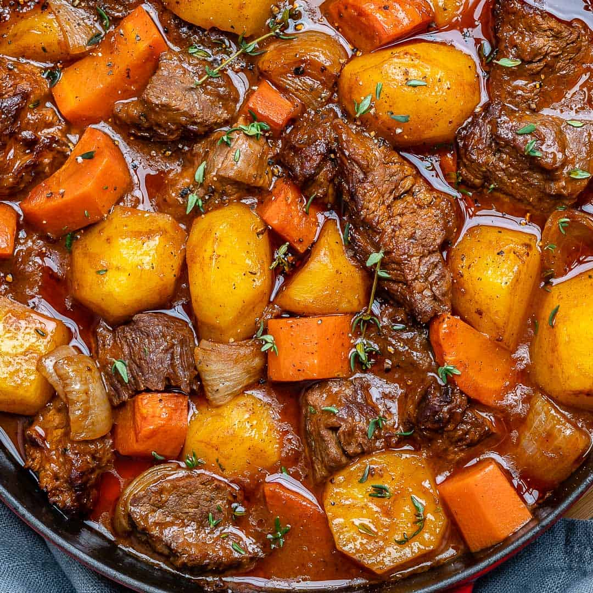

Beef Stew

Classic Homemade Beef Stew
This Classic Homemade Beef Stew recipe is so easy to make and so heavenly. A one-pot
meal that’s hearty, flavorful and loaded with tender beef morsels, potatoes, and carrots.
Cooked in a rich and savory sauce, this beef stew recipe is comfort food at its best.
INGRIDIENTS
- 2 lbs Beef Chuck Roast (cut into 2-inch chunks, excess fat removed)
- 1 Tsp Kosher Salt
- ½ Tsp Coarsely Ground Black Pepper
- 2 Tbsp Gluten-free All-Purpose Flour
- 2 Tbsp Olive Oil
- ½ Yellow Onion (Chopped Large)
- 4 Garlic Cloves (Minced)
- 1 Large Carrot (Cut into 2-inch chunks)
- 2 Yukon Gold Potatoes (Diced into 2-inch pieces)
- 2 Cups Beef Broth
- ¼ Cup Tomato Paste
- 1 Tbsp Worcestershire Sauce
- 1 Bay Leave
- 2 Tsp Fresh Thyme Leaves to garnish
INSTRUCTIONS
- Preheat oven to 325° F.
- Season the beef chunks on all sides with salt and pepper. Sprinkle the flour over and toss the seasoned beef to coat it on all sides
- Heat the olive oil in a large Dutch oven over medium heat. Brown the beef
in batches, on all sides, for 3-4 minutes per batch. Don’t worry
about cooking the beef all the way through at this stage.
Transfer the browned beef to a plate and set aside.
- Add the onions, garlic, and carrots to the Dutch oven, and cook,
stirring occasionally, for 2-3 minutes, or until slightly browned.
- Add the potatoes, beef broth, tomato paste, bay leaf, thyme, and Worcestershire sauce, and
use a wooden spoon to scrape the browned bits from the bottom of the pot.
- Bring the mixture to a simmer, stirring, and return the beef to the pot.
Cover the Dutch oven, and transfer to the preheated oven
- Cook the stew for 2-2.5 hours, or until the beef is very tender. Remove the bay leaf.
Taste the stew and season with additional salt and pepper, if necessary. Serve warm.